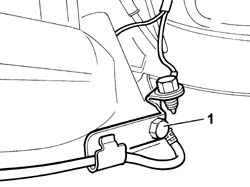
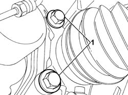
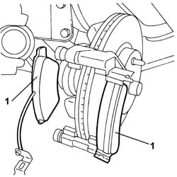

3310A60 FRONT BRAKE PADS - REPLACE
- Path
- Procedures > 33 BRAKES > 3310 DISC BRAKES > 3310A FRONT DISC BRAKES > 3310A60 FRONT BRAKE PADS - REPLACE
- Kind
- repair procedure (removal / refitting; the operation number is the code)
- Applies to
- all engines; all production periods
- Interactive page
- https://sloeber94.github.io/elrnDB-fUlss/en/#/179007285
Applies to: all engines; all production periods
 Removing
Removing
 Refitting
RefittingSee
Op. 5530B56 BATTERY DRIP TRAY COVER - R.R.
Disconnect the negative battery terminal.
Position the vehicle on a lift.
See
Op. 4450B12 FRONT WHEELS (TWO) - R+R
Release the brake pipe rubber retainer from its seat.
Disconnect the electrical connection for the brake pad wear sensor.
1. Unscrew the bracket on the brake caliper for the pad wear sensor electrical connection.

Applies to: all engines; all production periods
Move the brake caliper aside.
1. Undo the bolts fixing the caliper to the bracket.

Applies to: all engines; all production periods
1. Remove the brake pads.

Applies to: all engines; all production periods
Refitting
RemovingUsing the special tool, retract the front brake caliper cylinders.
Description | Code | Function | |
|---|---|---|---|
. | Spanner | Positioning brake caliper cylinders |
Position the brake caliper.
- Apply a locking compound to the caliper bolts.
- Tighten the nuts securing the caliper to the bracket and tighten to the specified torque.
Value daNm | Fastening | Component | dia | |
|---|---|---|---|---|
. | 3.5 | Bolt | FRONT BRAKE CALIPERS |
Position the brake pad wear sensor cable bracket and tighten the fixing bolt.
Connect the electrical connection for the brake pad wear sensor.
See
Op. 4450B12 FRONT WHEELS (TWO) - R+R
Remove the vehicle from the lift.
Connect the negative battery terminal.
See
Op. 5530B56 BATTERY DRIP TRAY COVER - R.R.
Test the operation of the braking system.